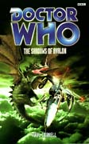

|
The Shadows of Avalon
|
BASIC PLOT DOCTOR COMPANIONS MATERIALISATION CIRCUIT Pg 247 Compassion materializes atop the Palace in Avalon. PREPARATORY READING CONTINUITY REFERENCES Pg 8 "I should be well past retirement, yet here I am, walking around in the body of a man in his late thirties." Happy Endings, as explained... Pg 9 ... here: "It all happened in a small village called Cheldon Bonniface, a couple of years ago. I was attending a wedding, as a matter of fact. Wedding of a friend of mine, a Professor Bernice Summerfield." Happy Endings. Pg 10 "Absolute priority, sir. From Trap Zero." The old Greyhound/Trap UNIT callsigns, from way back when, but particularly Invasion of the Dinosaurs. Pg 11 "TVs Compassion Tobin" This is the first mention of the name of the person on whom Compassion was based - Laura Tobin - since Interference part II. Pg 14 We're introduced to Cavisadoratrelundar and Gandarotethetledrax [arguably the most irritating of the Doctor's antagonists ever (and we're including the Slitheen, obviously)]. The names appear to suggest that Cavis is related to Romana (although see Continuity Cock-Ups) and Gandar is related to Drax from The Armageddon Factor. "He preferred his plain black jacket and gloves, and his groovy little beard." Gandar dresses like the Master in Delgado incarnation. Oh, how we laughed. Pg 15 "She wandered to the Time/Space Visualiser that formed the majority of one wall of the room." The Space Museum (although see Continuity Cock-Ups) and, unlike Earth technology over time, Gallifreyan tech clearly hasn't gone all miniaturised. "The cone of light that was designed to minimise her shadow snapped down around her." This would imply, extrapolating from Unnatural History and Interference parts I and II, that Romana is a Faction Paradox agent. It's never followed up, never mentioned again and flatly contradicted in The Ancestor Cell, however, so let's assume not, eh? Ho hum. Pg 16 "You don't need telling that such a development would be a vital advantage in our continuing dispute with the People. And in the future, during our first contact with the Enemy." The People are from (fittingly enough) The Also People originally, but popped up much more in the Benny NAs starting with Down. The Enemy are from Alien Bodies originally and are explained (laughably) in The Ancestor Cell. "Cavis made the Horns of Rassilon in the direction of the elevator." This, as we discovered in Timewyrm: Revelation, is the traditional two-fingered salute. See also Continuity Cock-Ups for one that isn't so much a Cock-Up as it is a pity. Pg 19 "'I am Gandar,' he intoned, staring straight into Rex's eyes. 'And you - will - obey - me!'" And then Gandar impersonates the Master. Oh, my sides. Pg 20 "There hadn't been a large-scale flap for the organization [UNIT] since the Ice Warriors." The Dying Days and we can possibly, nowadays at least, explain a lack of anything for UNIT to do between 1997 and 2012 on Torchwood. "Lethbridge-Stewart got the feeling that one day, when he was old again, he would be left in the corner of an old folk's home, the only one left who believed in monsters." This does, eventually happen, in The King of Terror, more's the pity. The next line in the novel, by the by, is lovely. (Go on, look it up, you know you're dying to.) Pg 24 "From time to time having to hold her wide-brimmed floppy hat on her head." Compassion appears to be wearing the fourth Doctor's hat. Pg 25 "A wax sigil in High Gallifreyan." The language from The Five Doctors, although presumably here in its modern version. It's all Greek to us. Pg 27 "He considered calling his ex-wife, Fiona. He hadn't done that for such a long time, though. She had a life of her own. Or perhaps Kate - he could have a chat with young Gordy." We see Fiona in The Scales of Injustice and Kate and Gordy in Downtime. Pg 28 "He was sure of his ability to know when a military man was telling the truth." Didn't do Alistair much good with Mike Yates back in Invasion of the Dinosaurs did it? Maybe he's got better at it since then. Pg 33 "Was he dreaming it, or had a cloud of butterflies erupted into the air a moment later?" The butterflies from the TARDIS butterfly room, originally from Vampire Science. Pg 35 "'How's your new body working out?' 'Beautifully! What about yours?'" Happy Endings. Pg 36 "Perhaps she's been weakened by how close she's come to death recently." Presumably Dominion and Unnatural History, but that's hardly 'recent' right now (although probably was when Cornell was writing). "Perhaps she was prepared." Reminiscent of that line from Logopolis. Pg 37 "Get arrested, break out of the jail, meet the powers that be..." The Doctor's standard plan from The Happiness Patrol. Pg 43 "The Brigadier raised an eyebrow. 'So I gather we're not in Cromer any more?'" The worst line (against stiff competition) from The Three Doctors (and a misquote of The Wizard of Oz, for the record). "'I'll explain -' 'No!'" The incredibly irritating reiteration of the 'I'll explain later' 'gag' from The Curse of Fatal Death is rather amusingly subverted here when Mab, who has never heard the Doctor use the phrase before, interrupts him before he gets the last word out and yet, somehow knowing what he's going to say, insists that he explains 'now'. Pg 45 "The Doctor had decided that they should spend some time together after their experiences on Skale." Parallel 59. Pg 52 "The Brigadier marvelled, once more, at this man's ability to do whatever it took to make everybody underestimate." Oh, so that's what the Doctor's been doing for the last 30 books! Pg 54 "The air was as pure and clear as the hour after a thunderstorm." The Five Doctors, so often Cornell's source of inspiration and quotation. "So is this the other dimension that Morgaine came from?" Battlefield, and you'd've thought so, wouldn't you? But you'd be wrong. "I got caught up in one such recurrence [of a faerie world] myself, recently." Autumn Mist. "This place really is a well at the centre of time." Norse mythology, periodically referenced in The Curse of Fenric, but that's not really relevant here. "The dimensional disturbance on Drebnar, the gestalt dream on Skale." Frontier Worlds and Parallel 59. Pg 58 Another reference to Mechta from Parallel 59. Pg 59 wins the contest for the silliest chapter title ever: "Woad Rage". "He had to know the truth before the High Council meeting." Mab's High Council is based on the Gallifreyan one we recognize so well. Pg 63 And the Council meets in a room with hexagonal ceilings, and includes the positions of Castellan (The Deadly Assassin) and Keeper of the Memory (Trial of a Time Lord, parts thirteen and fourteen: The Ultimate Foe). Pg 65 "The Keeper of the Memory, who was bald, and wore a little white cap above his ceremonial collar." Like the Keeper of the Matrix (and the Valeyard) does, from The Ultimate Foe again. Pg 67 "I'll explain later." I won't explain this any more. Pg 78 "The Doctor stepped into the manuscript-strewn room, barely acknowledging the Keeper, and his shadow moved with him, away from the old man, to be thrown instead on to the far wall of the chamber, where it loomed like a demon." Only Paul Cornell ever gets this poetic and, it has to be said, this is quite lovely. It is, of course, the dangerous Faction Paradox shadow from Interference part I et al. Pg 79 "He hadn't questioned the PM's ability to give him that order, he'd just said 'Yes, ma'am'." A reflection of a similar moment in Terror of the Zygons where the Prime Minister in the future is female. Pg 80 "Full camouflage gear with yomping packs." Yomping was one of JNT's hobbies. "I bring greetings from His Majesty and the Prime Minister." There was a King of England in Battlefield as well. Pg 82 "Are we time meddlers or what?" The Time Meddler. "We make Faction Paradox look like Melkurs." Alien Bodies et al, The Keeper of Traken and don't you just want Cavis and Gandar to die hideously? Pg 89 "Ah, there you are, Doctor. Still can't get it to work, I see." I am absolutely certain that this is a line from a Pertwee story but, to be frank, it could be practically any of them that feature the Brigadier and I've no idea which one it is. "I particularly enjoyed your resignation letter. Chaps in Geneva have never had to deal with one written in Old High Gallifreyan before." The Five Doctors. Pgs 89-90 "I could arrange for some giant maggots if you like." The Green Death. Pg 91 "Whatever's happened to you, this regeneration doesn't suit you." The Five Doctors. "He remembered feeling it in those last years with Alistair on Earth, when he'd had the whole of time and space gifted to him once more, but had chosen to stay with his new-found family." An explanation for the end of the Pertwee era. "While Faction Paradox existed, there was no reason for him to do anything. Everything was negotiable. The child from their ranks had told him as much." Unnatural History. Pgs 91-92 "He remembered his father, but he also remembered the loom, being twice born. He didn't know which he remembered from life and which from dreams." The Telemovie/Unnatural History/The Gallifrey Chronicles and Lungbarrow/Human Nature etc. The ultimate dichotomy, and rather neatly explained away as a function of Faction Paradox. Pg 92 "The Faction undermined him and the interferences he made in history." Reference to Interference parts I and II, shockingly enough. "It was going to be like Skale all over again." Parallel 59. Pg 93 "Look, I'm Merlin, if that helps." Battlefield. Pg 98 "'Rise, Margwyn,' Arwen was saying in his hooting, singsong voice." Consistent with Silurian vocal mannerisms as seen in Doctor Who and the Silurians. Pg 100 Reference to Filippa from Parallel 59. Pg 111 "The British pilots, thank the Other, must have been aware of that." The Other from Lungbarrow and a whole host of other NAs. Pg 113 "He saw, as he sometimes did when he encountered a mind, the future fate of this dragon, and his mouth set in his own line of hurt." The Telemovie. Pg 116 "If it's gonna be 2012 we can go visit Sam." Who might not be dead yet (Interference part II), but also might be (Sometime Never... and The Gallifrey Chronicles). "I just hope it's better than Sweden." Dominion. Pg 122 "Here I am. Take the bait. Arrest me. Lock me up, take me in chains to whoever's really in charge of this game. He remembered a time when that would have been enough, when from that point on he would have been utterly confident of winning. A time when he could be certain of what 'winning' meant." The Seventh Doctor, particularly in the NAs and, notably, particularly in those written by Paul Cornell. Pg 124 "The Doctor held the man's gaze for a moment, then let his lips curl into the words: 'I'm Zachary.'" I have a feeling that this is a reference and, if it isn't, it probably should be. However, finding it is damned difficult since any Google search term pretty much automatically brings up Zachary Cross Flane from The Impossible Planet. All I can think is that it's an obscure reference to Dr Zachary Smith from Lost in Space. Weird. There's another reference to yomping, followed by one to Ogrons. Pg 127 "Nothing can stop us now." The chapter title reminds us all of the unintentionally hilarious moment in The Underwater Menace episode that somehow survived the purging of the 1960s archives. Seeing it presented here doesn't make the fact of Cavis and Gandar quoting it in a few pages time any better or funnier; forewarned is not forearmed. Pg 133 "He was like the Red Army soldiers Fitz had marched with." Revolution Man. Pg 137 "This place was like the Matrix on Gallifrey." The Deadly Assassin. Pg 142 "Murder, sex and adventure in exotic frocks." Sounds a little like Bernice Summerfield's adventures except, of course, this is Cavis and Gandar whereas Bernice is actually fun and entertaining. "Othering Omega." You know this one. "Seal off the ventilation ducts." And this one. Pg 143 "He knew that, for this man at least, there was the possibility of a happy ending. The thought of it gave him a moment of pure joy. 'When you get home to Cheltenham,' he said. 'Avoid the sushi. Bye.'" Probably a reference to Happy Endings and probably the closest we get to the 'answer the second question' sequence in the Telemovie without actually quoting it directly. (Ironically, within a few pages, the guy has been brutally dismembered and tortured to death. This sounds like a Cock-Up, but is actually symbolic of the fact that Cavis and Gandar are buggering about with what should be happening.) Pg 144 "In a metal frame, an activated time vortex was silently spinning away. That familiar sight from his childhood was what had caught his notice as he trotted by." Rather wonderfully, since Cornell couldn't possibly have known, this pretty much foreshadows The Sound of Drums. "Two Interventionists recruited from the Patrexes. I've heard stories about you. About what you did to the Vardans." Patrexes from The Deadly Assassin, Vardans from The Invasion of Time and No Future. Pg 145 "I knew your father, Cavis. He visited my family at Lungbarrow once." Lungbarrow, obviously. Pg 146 "Central, eh? So what's Goth been telling you about me?" The Deadly Assassin. And is that a vast continuity error I hear leaping towards me? "Let's just kill the Otherf-" The other funny line from Cavis and Gandar (the first one being the one about ventilation ducts). Lungbarrow etc., obviously. "The writing on that blackboard had been terribly familiar." It turns out to be Compassion's (page 149), which we mention entirely because in a few books time the Doctor will start to carry around something else in Compassion's handwriting which he'll hang on to for a very long time. See The Burning. Pg 149 "Two white bolts blasted off the soldier's chests." Stasers, as per The Deadly Assassin, still fire little white blasts. Pg 151 "We Faraqued the Ka Faraq Gatri!" Yeah, and I'd have liked to see how you'd have managed against the short Scottish one. Now there was a Doctor and a half... Anyway, moving on, this is a reference to, well, just about anything you care to mentioned really. It's from the novelisation of Remembrance of the Daleks originally, turned up in the NAs a lot and is quoted in The Parting of the Ways on television. It means 'The Oncoming Storm' (which the Draconians also call him, as Return of the Living Dad mentions, not that we'd accuse the TV series of continuity errors, oh no) so presumably Gandar has just said 'We oncame the oncoming Storm'. Stupid git (and, yes, I know it's a play on words because 'Faraq' sounds a bit like 'Fuck', but I'm not twelve). "She knew him so well that they chorused it together then. 'Nothing in the world can stop us now!'" The Underwater Menace, but the weird thing about the way that this is presented is that it seems like Cavis and Gandar have actually watched the story. Pg 155 "They'd landed under the range of the magical auras, which had knocked helicopters out of the sky before now." Reminiscent of Battlefield. Pg 163 "He embodies things which... Boyish dreams, yes, but..." This almost quotes a similar sentiment from the Doctor, made in No Future (Pg 265, if you must know). Pg 166 "It was, she heard some people saying, like the millennium and the eclipse all over again." The Telemovie etc. "He'd panted and yelled in his sleep, mentioned the name of a woman he'd known in Mechta." Possibly Filippa from Parallel 59, although it may not be, since Compassion doesn't seem to recognize the name, and she almost certainly met Filippa in the wake of that story. Therefore it's probably Anya or Denna. Pg 167 "At the other end of the carriage as it rolled and bucked, a fight developed." A fight on a tube train also happened in No Future. Pg 168 "He'd shut his body's needs down to the point where some cruising TARDIS, Dalek timecraft, anything, might find his dessicated husk in several hundred years" We've seen Dalek timecraft in The Chase and The Daleks' Master Plan. "Unless it was by one of the predators. A Swimmer, a Polt, a Chronovore or its young. Even the tentacles of the Kraken." In order The Taking of Planet 5, unknown, The Time Monster and No Future, Unnatural History. Pg 169 "And yet he did not relax and let the time winds rip him apart." Warriors' Gate. "He dropped them on a wide white pavement opposite a tall silver building." King Centre would appear to be Canary Wharf, formerly location of Millennial Rites and home of the Torchwood Institute in Army of Ghosts and Doomsday. Pg 180 "Cavis and Gandar watched the scene on a Time/Space Visualiser." Like Romana, Candar and Gavis (easy mistake to make) also have one, and it's still from The Space Museum, and still not what Hartnell says in The Chase. Pg 182 High Gallifreyan gets another namecheck and it's still from The Five Doctors. Pg 183 "Why hadn't he stayed where there was a good life for him?" On Mechta, with Filippa, from Parallel 59. Pg 194 "She knew that he had no Watcher, that he was doing this on his own." Logopolis. Pg 203 Mention of Faction Paradox. "There'll always be someone willing to interfere back, to come up with a stupid idea of their own." You get the feeling that Cornell didn't like Interference very much. "The Doctor spun round and whipped his hand out into a fierce point that put his finger right between King's eyes." Survival. Pg 204 "Now, when I say run -" You know this one. Pg 212 "Time, death and pain existed so that tiny human beings like him could stand against them. So that they could do the best they could." Time, Death and Pain are old friends from the NAs. The 'do they best they could' line is Battlefield. Pg 217 "The Doctor reached the guard post by the door of the prefabricated block, and slapped his pockets, looking for his UNIT pass. Finally, he gave up, shouted, 'It's me, OK?' and ducked past the guard." Battlefield for both the UNIT pass and 'It's me'. Pg 225 "As the Brigadier's mouth opened with a cry of astonishment and hope, the figure backed up, took at run, and leapt out into space." The Doctor's impersonating Shardovan from Castrovalva. Pg 237 Brief reference to the Doctor's respiratory bypass system. Pg 244 "Doris? So that's... Oh, no. And I once said I'd protect her." Happy Endings. Pg 247 "And adventures in time and space." Very Terrance Dicks. Pg 248 "I am... A TARDIS!" Very similar to 'I am... the Doctor' in The Dying Days. Pg 249 "Her biodata warping through the continuum." The Deadly Assassin and Arc of Infinity gave us biodata or biog data. "When you altered my receiver to pick up signals only from your TARDIS" Interference part II. "The block-transfer equations were solving themselves in my nervous system." Logopolis. Pg 250 "So it wasn't my old Type 40 that those other TARDISes were talking to during the Fendahl affair, it was you!" The Taking of Planet 5. "And this explains why the scanner blew up on Skale." Parallel 59. Pg 251 "Compassion hiccupped." Like Marie in Alien Bodies. "Oops. Sorry. TARDISes inside other TARDISes." Logopolis. Pg 252 The chapter title is "Interference denied". No, Cornell really didn't like Interference, did he? "And then she smiled broadly at the sight of Compassion. 'Type 102'" Marie, in Alien Bodies, was a Type 103, so presumably Compassion's 'child'. But see also Continuity Cock-Ups. "The type 103s. I've met one, and even she had a name. You think they'll give you the edge in the war that's coming." Alien Bodies and Alien Bodies. "Your little jaunt in the Obverse." The Blue Angel. "Iris tried to turn me away from there." The end of The Blue Angel. Pg 253 "There was a time when you cared desperately about slavery and injustice." Warriors' Gate. "It's so beastly." Only Lalla Ward would have ever gotten away with delivering this line in front of a camera. Pg 256 "Then he reached out and fondly touched Compassion on the nose." Just like the Seventh Doctor used to do with Ace. Pg 260 "The Doctor and Fitz raced along an ornately polished corridor of wood panels, past dignified oil portraits in styles ranging from classical to cubist of the Doctor's family, friends, and past selves." This is possibly a reference to the cover of Lungbarrow. "'You know,' Fitz panted, sounding utterly lost and boggled, 'in the past, whenever I thought about being where we are now, the whole experience was much more pleasurable.'" This is the first in a string of jokes that we will get in the next few books about being inside Compassion. Like the jokes about Fitz desperately needing a cigarette and never being able to find one in deep space, it will never get any funnier. Pg 274 "'Are you really telling me that you're prepared to go on the run from your own people in this "stolen TARDIS"?' The Doctor looked up across the console at him, or rather past him, his eyes searching for future possibilities. 'Why not?' he murmured, and he managed a cunning, hopeful smile. 'After all... it's worked before!'" The Five Doctors, obviously. OLD FRIENDS AND OLD ENEMIES NEW FRIENDS AND NEW ENEMIES The character of Symcox, a brief name-drop, is named for Caroline Symcox, author of the audio adventure The Council of Nicea and now Paul Cornell's wife. Gandar, who ends the novel in at least his fourth incarnation (it's implied that he has two hearts at the beginning of the novel, meaning he starts in at least his second body, and he regenerates twice as the novel progresses). Queen Regent Mab, Gwyllm, Arun, Owen, Rhodri. Chorus of Avalonian peasants and villagers, UNIT and SAS soldiers, Fair Folk babies etc.
CONTINUITY COCK-UPS PLUGGING THE HOLES [Fan-wank theorizing of how to fix continuity cock-ups] FEATURED ALIEN RACES Dragons. FEATURED LOCATIONS Avalon, the land of human dreaming, which roughly takes up the same amount of space as the British Isles, same timeframe. A park bench in October 1967. IN SUMMARY - Anthony Wilson |
|
 |